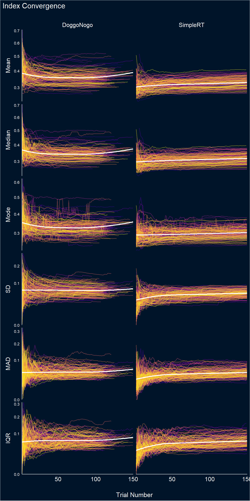
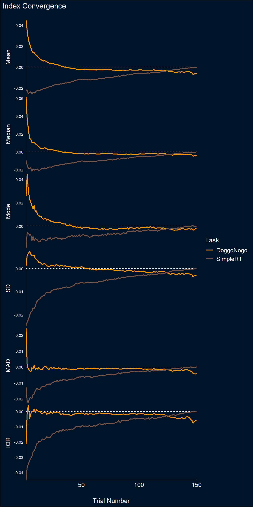

Code
library(tidyverse)
library(easystats)
library(patchwork)
library(ggside)
library(ggdist)
library(patchwork)
library(glmmTMB)
colors <- c("DoggoNogo" = "#FF9800", "Simple" = "#795548", "SimpleRT" = "#795548")library(tidyverse)
library(easystats)
library(patchwork)
library(ggside)
library(ggdist)
library(patchwork)
library(glmmTMB)
colors <- c("DoggoNogo" = "#FF9800", "Simple" = "#795548", "SimpleRT" = "#795548")df <- read.csv("../data/data_participants.csv") |>
mutate(across(c(Experiment_StartDate, DoggoNogo_Start, DoggoNogo_End, DoggoNogo_L1_Start, DoggoNogo_L1_End), as.POSIXct)) |>
mutate(
DoggoNogo_Duration = as.numeric(DoggoNogo_End - DoggoNogo_Start),
SimpleRT_Duration = ((SimpleRT_end - SimpleRT_start) / 1000) / 60,
Assessment_DurationDiff_DoggoNogo = Assessment_Duration_DoggoNogo - DoggoNogo_Duration,
Assessment_DurationDiff_Simple = Assessment_Duration_Simple - SimpleRT_Duration
) |>
mutate(
Assessment_DurationDiff_DoggoNogo = ifelse(abs(Assessment_DurationDiff_DoggoNogo) > 15, NA, Assessment_DurationDiff_DoggoNogo),
Assessment_DurationDiff_Simple = ifelse(abs(Assessment_DurationDiff_Simple) > 15, NA, Assessment_DurationDiff_Simple)
)
df_simpleRT <- read.csv("../data/data_simpleRT.csv")
df_dog <- read.csv("../data/data_doggonogo.csv")dflong <- df |>
select(Participant, Condition, starts_with("Assessment_")) |>
mutate(jitter_x = runif(nrow(df), 0.02, 0.08),
jitter_y = runif(nrow(df), -0.2, 0.2)) |>
pivot_longer(cols = starts_with("Assessment_"), names_to = "Question", values_to = "Score") |>
separate(col = Question, into = c("Assessment", "Question", "Task"), sep = "_") |>
filter(Question != "Duration") |>
mutate(
Question = ifelse(Question=="DurationDiff", "Duration Δ", Question),
TaskOrder = case_when(
Condition == "DoggoFirst" & Task == "DoggoNogo" ~ "First task",
Condition == "SimpleFirst" & Task == "Simple" ~ "First task",
.default = "Second task"),
side = case_when(
Condition == "DoggoFirst" & Task == "DoggoNogo" ~ "left",
Condition == "DoggoFirst" & Task == "Simple" ~ "left",
Condition == "SimpleFirst" & Task == "DoggoNogo" ~ "right",
.default = "right"),
position = case_when(
side == "left" & TaskOrder == "First task" ~ 0.9,
side == "right" & TaskOrder == "First task" ~ 1.1,
side == "left" & TaskOrder == "Second task" ~ 1.9,
.default = 2.1),
jitter_x = case_when(
side == "left" & TaskOrder == "First task" ~ 0.9 + jitter_x,
side == "right" & TaskOrder == "First task" ~ 1.1 - jitter_x,
side == "left" & TaskOrder == "Second task" ~ 1.9 + jitter_x,
.default = 2.1 - jitter_x),
jitter_y = ifelse(Question == "Duration Δ", Score, jitter_y + Score),
linecolor = case_when(
side == "left" & TaskOrder == "First task" ~ "DoggoNogo",
side == "right" & TaskOrder == "First task" ~ "Simple",
side == "left" & TaskOrder == "Second task" ~ "DoggoNogo",
.default = "Simple"))
get_bf <- function(dflong, outcome="Enjoyment", y=5, y1=y, y2=y) {
if(outcome=="Repeat") dflong$Score <- dflong$Score + 4
dat <- filter(dflong, TaskOrder=="First task", Question==outcome) |>
filter(!is.na(Score))
rez1 <- BayesFactor::ttestBF(formula=Score ~ Task, data=dat) |>
parameters::parameters() |>
mutate(Mean_Doggo = mean(dat$Score[dat$Task=="DoggoNogo"]),
Mean_Simple = mean(dat$Score[dat$Task=="Simple"]),
Ratio = Mean_Doggo / Mean_Simple,
x=1, y=y, color="DoggoNogo")
dat <- filter(dflong, Condition=="DoggoFirst", Question==outcome) |>
select(Participant, Task, Score) |>
pivot_wider(names_from = Task, values_from = Score) |>
filter(!is.na(DoggoNogo) & !is.na(Simple))
rez2 <- BayesFactor::ttestBF(dat$DoggoNogo, dat$Simple) |>
parameters::parameters() |>
mutate(Mean_Doggo = mean(dat$DoggoNogo),
Mean_Simple = mean(dat$Simple),
Ratio = Mean_Simple / Mean_Doggo,
x=1.75, y=y1, color="Simple")
dat <- filter(dflong, Condition=="SimpleFirst", Question==outcome) |>
select(Participant, Task, Score) |>
pivot_wider(names_from = Task, values_from = Score) |>
filter(!is.na(DoggoNogo) & !is.na(Simple))
rez3 <- BayesFactor::ttestBF(dat$DoggoNogo, dat$Simple) |>
parameters::parameters() |>
mutate(Mean_Doggo = mean(dat$DoggoNogo),
Mean_Simple = mean(dat$Simple),
Ratio = Mean_Doggo / Mean_Simple,
x=2.25, y=y2, color="DoggoNogo")
rez <- rbind(rez1, rez2, rez3)
if(outcome=="Duration Δ") {
rez$Ratio <- ifelse(sign(rez$Median) %in% c(1, 0),
paste0("+", insight::format_value(rez$Median, zap_small=TRUE)),
insight::format_value(rez$Median, zap_small=TRUE))
} else {
rez$Ratio <- ifelse(sign(rez$Ratio - 1) %in% c(1, 0),
paste0("+", insight::format_percent(rez$Ratio - 1, digits=0)),
paste0("-", insight::format_percent(1 - rez$Ratio, digits=0)))
}
rez |>
select(Mean_Doggo, Mean_Simple, Median, Ratio, BF, x, y, color) |>
mutate(Question = outcome,
Label = paste0(insight::format_value(Ratio),
insight::format_bf(BF, stars_only =TRUE)))
}
rez <- rbind(
get_bf(dflong, "Enjoyment", y=3.5, y1=1, y2=3),
get_bf(dflong, "Repeat", y=-0.5, y1=-2, y2=-1),
get_bf(dflong, "Duration Δ", y=2.5, y1=0, y2=0))p1 <- dflong |>
filter(!is.na(Score)) |>
mutate(Question = fct_relevel(Question, "Enjoyment", "Duration Δ", "Repeat")) |>
ggplot(aes(y=Score, x=TaskOrder)) +
geom_line(aes(group=Participant, x=jitter_x, y=jitter_y, color=linecolor), alpha=0.1) +
geom_point2(aes(color=Task, x=jitter_x, y=jitter_y), alpha=0.3, size=3) +
ggdist::stat_halfeye(aes(x=position, fill=Task, side=side), alpha=0.5, scale=3,
key_glyph = "rect") +
geom_label(data=mutate(rez, Question = fct_relevel(Question, "Enjoyment", "Duration Δ", "Repeat")),
aes(x=x, y=y, label=Label, color=color), size=3) +
facet_wrap(~Question, scales = "free_y", ncol=3) +
scale_x_continuous(breaks = c(1, 2), labels = c("First task", "Second task")) +
scale_color_manual(values=colors, guide="none") +
scale_fill_manual(values=colors) +
guides(fill = guide_legend(override.aes = list(alpha = 1))) +
theme_minimal() +
theme(strip.background = element_rect(fill = "lightgrey", color=NA),
axis.title.y = element_blank(),
axis.title.x = element_blank(),
legend.position = "top")
p2 <- png::readPNG("../documents/illustration_feedback.png") |>
grid::rasterGrob() |>
patchwork::wrap_elements()
(p2 / p1) + plot_annotation(title="Task Assessments",
theme=theme(plot.title = element_text(face="bold", size=20)))df_rt <- rbind(
df_dog |>
filter(Response_Type != "early" & Response_Type != "missed") |>
select(Participant, RT, Trial=Valid_Trial_Count, ISI) |>
mutate(Task = "DoggoNogo"),
df_simpleRT |>
filter(!is.na(RT)) |>
select(Participant, RT, Trial, ISI) |>
mutate(Task = "SimpleRT")) |>
mutate(Task = as.factor(Task),
Participant = as.factor(Participant))mdog_poly2 <- glmmTMB::glmmTMB(RT ~ poly(ISI, 2) + (poly(ISI, 2)|Participant),
data=filter(df_rt, Task=="DoggoNogo"))
mdog_poly3 <- glmmTMB::glmmTMB(RT ~ poly(ISI, 3) + (poly(ISI, 2)|Participant),
data=filter(df_rt, Task=="DoggoNogo"))
mdog_gam <- mgcv::gamm(RT ~ s(ISI), random=list(Participant=~1),
data=filter(df_rt, Task=="DoggoNogo"))
msimple_poly2 <- glmmTMB::glmmTMB(RT ~ poly(ISI, 2) + (poly(ISI, 2)|Participant),
data=filter(df_rt, Task=="SimpleRT"))
msimple_poly3 <- glmmTMB::glmmTMB(RT ~ poly(ISI, 3) + (poly(ISI, 2)|Participant),
data=filter(df_rt, Task=="SimpleRT"))
msimple_gam <- mgcv::gamm(RT ~ s(ISI), random=list(Participant=~1),
data=filter(df_rt, Task=="SimpleRT"))
test_bf(mdog_poly2, mdog_poly3, mdog_gam)Bayes Factors for Model Comparison
Model BF
[mdog_poly3] poly(ISI, 3) + (poly(ISI, 2) | Participant) 2.94
[mdog_gam] s(ISI) + (1 | Participant) 0.00e+00
* Against Denominator: [mdog_poly2] poly(ISI, 2) + (poly(ISI, 2) | Participant)
* Bayes Factor Type: BIC approximationtest_bf(msimple_poly2, msimple_poly3, msimple_gam)Bayes Factors for Model Comparison
Model BF
[msimple_poly3] poly(ISI, 3) + (poly(ISI, 2) | Participant) 0.007
[msimple_gam] s(ISI) + (1 | Participant) 0.00e+00
* Against Denominator: [msimple_poly2] poly(ISI, 2) + (poly(ISI, 2) | Participant)
* Bayes Factor Type: BIC approximationpred_all <- rbind(
modelbased::estimate_relation(mdog_gam, length=100, include_random = FALSE) |>
mutate(Model = "GAM", Task="DoggoNogo", Participant=NA),
modelbased::estimate_relation(mdog_poly2, length=100, include_random = FALSE) |>
mutate(Model = "Poly2", Task="DoggoNogo"),
modelbased::estimate_relation(mdog_poly3, length=100, include_random = FALSE) |>
mutate(Model = "Poly3", Task="DoggoNogo"),
modelbased::estimate_relation(msimple_gam, length=100, include_random = FALSE) |>
mutate(Model = "GAM", Task="SimpleRT", Participant=NA),
modelbased::estimate_relation(msimple_poly2, length=100, include_random = FALSE) |>
mutate(Model = "Poly2", Task="SimpleRT"),
modelbased::estimate_relation(msimple_poly3, length=100, include_random = FALSE) |>
mutate(Model = "Poly3", Task="SimpleRT")
)
pred_ppt <- rbind(
modelbased::estimate_relation(mdog_poly2, length=40, include_random = TRUE) |>
mutate(Model = "Poly2", Task="DoggoNogo"),
modelbased::estimate_relation(msimple_poly2, length=40, include_random = TRUE) |>
mutate(Model = "Poly2", Task="SimpleRT")
)
p1 <- pred_all |>
ggplot(aes(x = ISI, y = Predicted)) +
geom_line(data=pred_ppt, aes(color=Participant), linewidth=1, alpha=0.5) +
geom_line(aes(linetype=Model), linewidth=2, color="white") +
# geom_hline(yintercept = 0.325, linetype = "dashed") +
# geom_vline(xintercept = c(1, 4), linetype = "dashed", color="red") +
# scale_x_continuous(expand = c(0, 0), breaks=c(0.2, 1, 2, 3, 4)) +
scale_color_viridis_d(option="plasma") +
scale_linetype_manual(values=c("Poly2"="solid", "GAM" = "dashed", "Poly3"="dotted")) +
theme_abyss() +
theme(legend.position = "none") +
facet_wrap(~Task) +
# coord_cartesian(xlim = c(0.2, 4.1)) +
labs(y = "RT - Response Time (s)", x = "ISI - Interstimulus Interval (s)",
title = "Effect of ISI")
p1 # COMPUTE CUMULATIVE INDICES
get_indices <- function(rt, suffix="") {
x <- data.frame(
Mean = mean(rt),
Median = median(rt),
Mode = suppressWarnings(modeest::mlv(rt, method="meanshift")),
SD = sd(rt),
MAD = mad(rt),
IQR = IQR(rt)
)
setNames(x, paste0(names(x), suffix))
}
bootstrapped_ci <- function(rt=df$RT, iter=50) {
rez <- data.frame()
for(i in 1:iter) {
new_rt <- rt[sample(1:length(rt), length(rt), replace=TRUE)]
rez <- rbind(rez, get_indices(new_rt))
}
out <- as.data.frame(sapply(rez, function(x) quantile(x, c(0.05, 0.95)), simplify=FALSE))
out <- rbind(out, sapply(rez, sd))
out$Index <- c("Min", "Max", "SD")
pivot_wider(out, names_from = Index, values_from = -Index)
}
# This takes a long time.
progbar <- progress::progress_bar$new(total = length(unique(df$Participant))*2)
df_stability <- data.frame()
for(p in unique(df_rt$Participant)) {
for(t in unique(df_rt$Task)) {
progbar$tick()
ppt <- df_rt[df_rt$Participant == p & df_rt$Task == t, ]
truth <- get_indices(ppt$RT, suffix="_Truth")
trials <- tail(sort(ppt$Trial), -1)
for(i in trials[trials <= 150]) {
rt <- ppt[ppt$Trial <= i, "RT"]
dat <- cbind(
data.frame(Participant = p, Task = t, Trial = i),
get_indices(rt, "_Cumulative"),
bootstrapped_ci(rt, iter=10),
truth
)
df_stability <- rbind(df_stability, dat)
}
}
}
saveRDS(df_stability, "../data/df_stability.rds")df_stability <- readRDS("../data/df_stability.rds")
df_stability |>
mutate(Max_N = max(Trial), .by=c("Participant", "Task")) |>
mutate(Max_N = min(Max_N), .by=c("Participant")) |>
filter(Trial <= Max_N) |>
pivot_longer(cols = ends_with("Cumulative"), names_to = "Index", values_to = "Value") |>
select(-ends_with("_SD"), -ends_with("_Min"), -ends_with("_Max"), -ends_with("_Truth")) |>
mutate(Index = str_remove(Index, "_Cumulative")) |>
pivot_wider(values_from="Value", names_from="Task") |>
summarize(r = cor(DoggoNogo, SimpleRT, use = "pairwise.complete.obs"), .by=c(Index, Trial)) |>
mutate(Index = fct_relevel(Index, "Mean", "Median", "Mode", "SD", "MAD", "IQR")) |>
ggplot(aes(x=Trial, y=r)) +
geom_line(aes(color=Index), linewidth=1.5, alpha=0.9) +
theme_abyss() +
labs(title="Correlation Between Tasks", y="Correlation Coefficient", x="Trial Number") +
scale_color_manual(values=c("Mean"="#FF9800", "Median"="#E91E63", "Mode"="#9C27B0",
"SD"="#4CAF50", "MAD"="#2196F3", "IQR"="#795548")) +
scale_x_continuous(expand=c(0, 0.1)) get_diff <- function(x, y) {
parameters::parameters(t.test(x, y))$Difference
}
get_p <- function(x, y) {
insight::format_p(parameters::parameters(t.test(x, y))$p, stars_only = TRUE)
}
df_stability |>
mutate(Max_N = max(Trial), .by=c("Participant", "Task")) |>
mutate(Max_N = min(Max_N), .by=c("Participant")) |>
filter(Trial <= Max_N) |>
pivot_longer(cols = ends_with("Cumulative"), names_to = "Index", values_to = "Value") |>
select(-ends_with("_SD"), -ends_with("_Min"), -ends_with("_Max"), -ends_with("_Truth")) |>
mutate(Index = str_remove(Index, "_Cumulative")) |>
pivot_wider(values_from="Value", names_from="Task") |>
summarize(diff = get_diff(DoggoNogo, SimpleRT),
p = get_p(DoggoNogo, SimpleRT),
.by=c(Index, Trial)) |>
mutate(Index = fct_relevel(Index, "Mean", "Median", "Mode", "SD", "MAD", "IQR")) |>
filter(p %in% c("*", "**", "***")) |>
ggplot(aes(x=Trial, y=diff)) +
geom_line(aes(color=Index), linewidth=1.5, alpha=0.9) +
theme_abyss() +
labs(title="Difference Between Tasks", y="Difference", x="Trial Number") +
scale_color_manual(values=c("Mean"="#FF9800", "Median"="#E91E63", "Mode"="#9C27B0",
"SD"="#4CAF50", "MAD"="#2196F3", "IQR"="#795548")) +
scale_x_continuous(expand=c(0, 0.1)) dat <- df_stability |>
pivot_longer(cols = -c(Participant, Task, Trial), names_to = "Index", values_to = "Value") |>
separate(Index, into = c("Index", "Type"), sep = "_") |>
pivot_wider(names_from = Type, values_from = Value) |>
mutate(Diff = Cumulative - Truth,
Diff_Min = Min - Truth,
Diff_Max = Max - Truth) |>
mutate(Index = fct_relevel(Index, "Mean", "Median", "Mode", "SD", "MAD", "IQR"))
dat |>
ggplot(aes(x=Trial, y=Cumulative)) +
# geom_hline(yintercept = 0, linetype = "dashed") +
# geom_ribbon(aes(ymin = Min, ymax = Max, fill=Participant), alpha = 0.2) +
geom_line(aes(color=Participant), linewidth=0.7, alpha=0.4) +
geom_smooth(method = 'loess', formula = 'y ~ x', se=FALSE, color="white", linewidth=1) +
facet_grid(Index~Task, scales="free", switch="y") +
scale_color_viridis_d(option="plasma", guide="none") +
scale_fill_viridis_d(option="plasma", guide="none") +
scale_x_continuous(expand=c(0, 0.2)) +
scale_y_sqrt(expand=c(0, 0)) +
theme_abyss() +
theme(strip.placement = "outside",
strip.text = element_text(size = 12, face="plain"),
axis.text.y = element_text(size=8),
panel.grid.major = element_blank()) +
labs(y=NULL, x="Trial Number", title="Index Convergence") 
dat |>
summarize(Diff = mean(Diff), .by=c(Task, Index, Trial)) |>
ggplot(aes(x=Trial, y=Diff)) +
geom_hline(yintercept = 0, linetype = "dashed", color="white") +
geom_line(aes(color=Task), linewidth=1) +
facet_grid(Index~., scales="free", switch="y") +
scale_x_continuous(expand=c(0, 0.2)) +
scale_y_continuous(expand=c(0, 0)) +
scale_color_manual(values=colors) +
theme_abyss() +
theme(strip.placement = "outside",
strip.text = element_text(size = 12, face="plain"),
axis.text.y = element_text(size=8),
panel.grid.major = element_blank()) +
labs(y=NULL, x="Trial Number", title="Index Convergence") 
Reliability corresponds to the ratio of the variability of the between-participants point-estimates to the average within-participant variability.
dat <- df_stability |>
summarize(Mean_between = sd(Mean_Cumulative),
Mean_within = mean(Mean_SD),
Mean_Reliability = Mean_between / Mean_within,
Median_between = sd(Median_Cumulative),
Median_within = mean(Median_SD),
Median_Reliability = Median_between / Median_within,
Mode_between = sd(Mode_Cumulative),
Mode_within = mean(Mode_SD),
Mode_Reliability = Mode_between / Mode_within,
SD_between = sd(SD_Cumulative),
SD_within = mean(SD_SD),
SD_Reliability = SD_between / SD_within,
MAD_between = sd(MAD_Cumulative),
MAD_within = mean(MAD_SD),
MAD_Reliability = MAD_between / MAD_within,
IQR_between = sd(IQR_Cumulative),
IQR_within = mean(IQR_SD),
IQR_Reliability = IQR_between / IQR_within,
.by=c(Task, Trial)) |>
pivot_longer(ends_with("Reliability"), names_to="Index", values_to="Reliability") |>
mutate(Index = str_remove(Index, "_Reliability"),
Index = fct_relevel(Index, "Mean", "Median", "Mode", "SD", "MAD", "IQR"))
dat |>
ggplot(aes(x=Trial, y=Reliability)) +
geom_area(aes(y=1), fill="red", alpha=0.15) +
geom_ribbon(aes(ymin=1, ymax=3), fill="yellow", alpha=0.15) +
geom_ribbon(aes(ymin=3, ymax=6), fill="green", alpha=0.15) +
geom_line(aes(color=Index, linetype=Task), linewidth=1, alpha=0.9) +
# facet_grid(~Task, scales="free_y") +
scale_color_manual(values=c("Mean"="#FF9800", "Median"="#E91E63", "Mode"="#9C27B0",
"SD"="#4CAF50", "MAD"="#2196F3", "IQR"="#795548")) +
scale_x_continuous(expand=c(0, 0.1)) +
scale_y_continuous(expand=c(0, 0), breaks=c(0, 1, 3, 6)) +
theme_abyss() +
labs(title = "Precision Reliability", y="Between / Within Reliability", x="Trial Number")